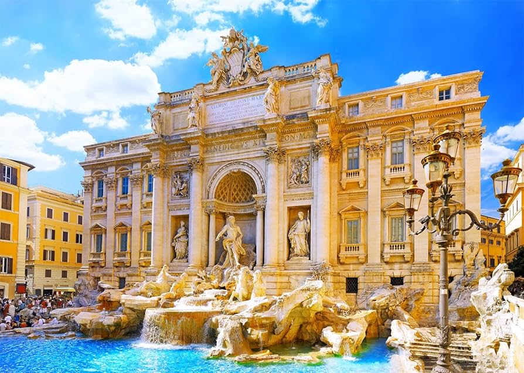
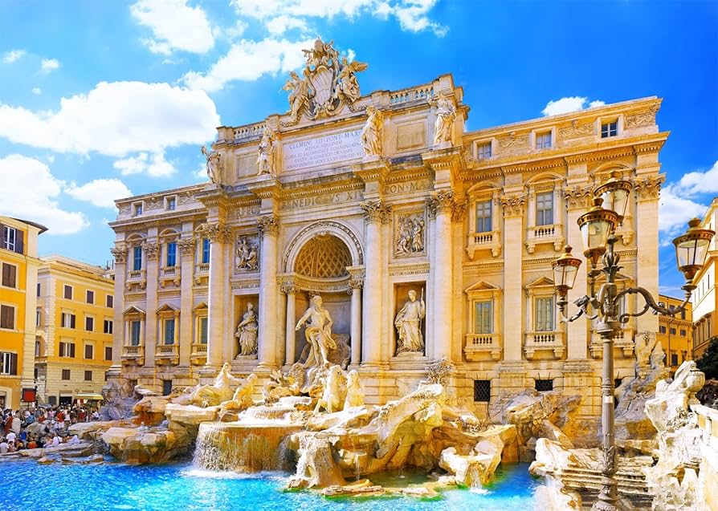
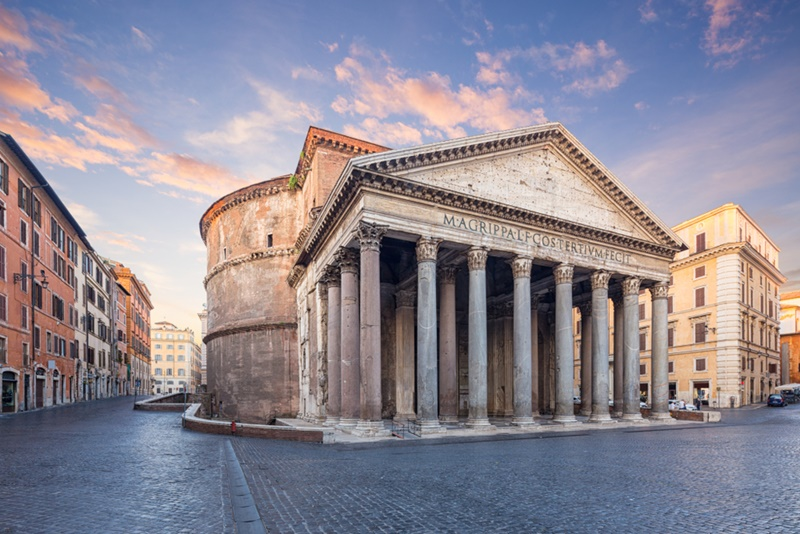
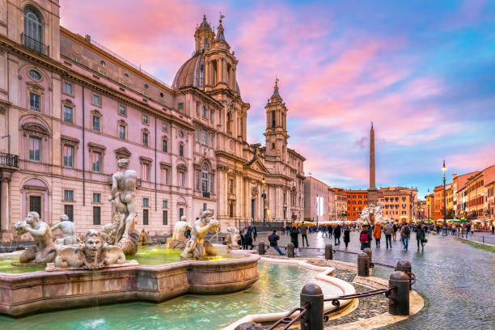
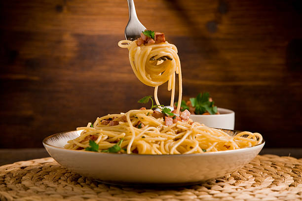
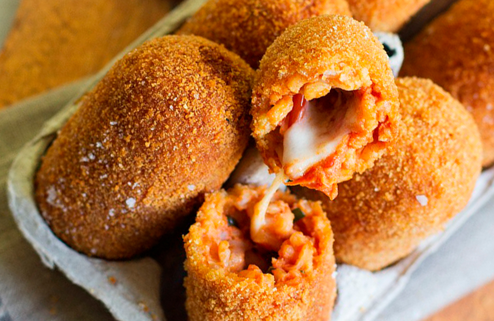

Roma
A capital da Itália, rica em história, cultura e monumentos famosos como o Coliseu, o Vaticano e a Fontana di Trevi.
 

Descrição
Roma, conhecida como "A Cidade Eterna", é um dos maiores centros históricos do mundo, repleta de monumentos icônicos como o Coliseu e o Vaticano.
Pontos Turísticos de Roma

Panteão: Um dos edifícios mais bem preservados da Roma Antiga, hoje funciona como igreja.

Fórum Romano: Coração da Roma Antiga, onde se concentravam os principais edifícios públicos.

Piazza Navona: Uma das praças mais bonitas de Roma, com fontes e arquitetura barroca impressionante.
Comidas Típicas de Roma
-

Carbonara: Um prato de massa com molho cremoso, bacon e queijo parmesão.
-

Supplì: Bolinho de arroz frito recheado com mozzarella.